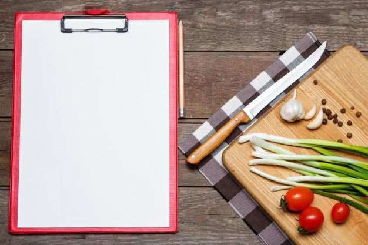
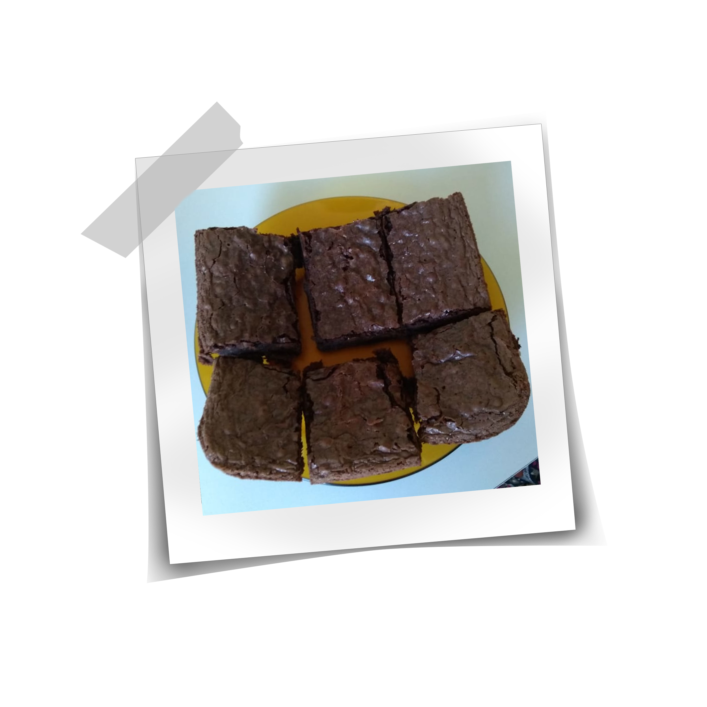

Nosso Livro de Receitas
Aqui você vai encontrar todas as nossas receitas preferidas!
(Em construção)

Brownie

Ingredientes:
- Mistura para Brownie Betty Crocker;
- 2 ovos;
- 3 colheres de sopa de água (30ml);
- 1/4 de xícara de chá de óleo (50ml).
Modo de Preparo:
- Preaqueça o forno à temperatura de 200 °C por 10 minutos;
- Utilize uma forma antiaderente ou untada com margarina ou manteiga;
- Junte todos os ingredientes em um recipiente;
- Misture tudo em movimentos circulares até obter uma massa lisa, brilhante e homogênea;
- Despeje a massa na forma;
- Leve ao forno a 200 °C por 20 a 25 minutos;
- Deixe esfriar, corte em pedaços e sirva a vontade!!
<- Voltar